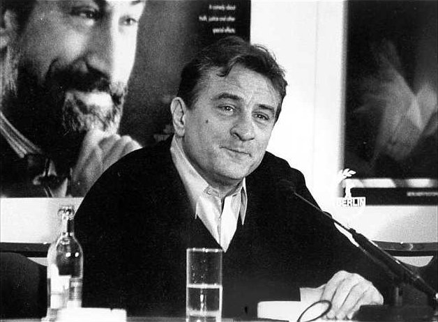
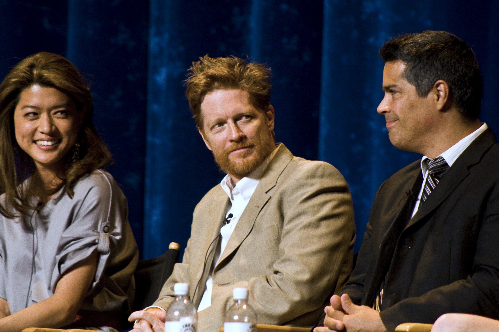

"There's no place like New York.It's the most exciting city in the world now. That's the way it is. That's it." -- Robert De Niro
|  | AWAKENINGS - 1990 |
A BRONX TALE - 1993 |
|
FINDING FORRESTER - 2000 |
|
KNIGHTS OF THE SOUTH BRONX - 2003 |
|
|  | GUN HILL ROAD - 1988 |